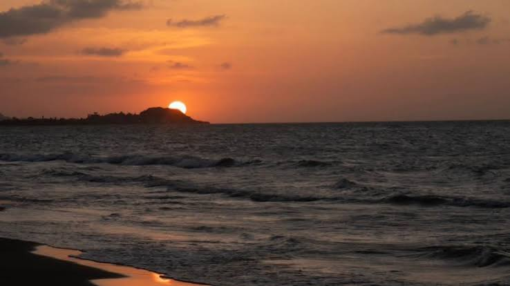

Las luces de Punta Astilleros
Ovnis / Misterios del Caribe

Un misterio frente al mar Caribe
En la costa del municipio de Piojó, Atlántico, se encuentra Punta Astilleros, un lugar reconocido por sus paisajes naturales, sus playas rurales y la tranquilidad de su entorno. Lejos del ruido de las grandes ciudades, este rincón del Caribe ofrece un escenario particular para contemplar el cielo durante la noche.
Cuando cae la oscuridad y el horizonte se mezcla con el mar, cualquier destello puede despertar la curiosidad. Una luz que aparece a lo lejos, un punto brillante que parece desplazarse lentamente o un resplandor que desaparece en cuestión de segundos pueden convertirse en el comienzo de una historia misteriosa.
¿Podrían ser luces de embarcaciones, aeronaves, satélites o algún fenómeno atmosférico? En un lugar donde el paisaje nocturno tiene tanto protagonismo, distinguir el origen de cada destello no siempre resulta sencillo.
El cielo y sus luces inexplicables
Las luces que se observan sobre zonas costeras suelen generar diferentes interpretaciones. Algunas pueden provenir de barcos que navegan mar adentro, mientras que otras corresponden a aeronaves o satélites que reflejan la luz del Sol.
En febrero de 2024, habitantes de diferentes lugares de Colombia compartieron imágenes de una fila de luces que atravesaba el cielo nocturno. El fenómeno llamó la atención de muchas personas y fue relacionado inicialmente con posibles ovnis. Sin embargo, las publicaciones periodísticas señalaron que las luces correspondían a satélites de la red Starlink.
Aunque este episodio no confirma un avistamiento en Punta Astilleros, permite comprender cómo un fenómeno tecnológico puede convertirse en un misterio para quienes lo observan desde lugares alejados de las ciudades.
Entre la naturaleza y lo desconocido
Punta Astilleros también es un entorno de gran riqueza natural. Sus playas, dunas, manglares y zonas de humedales forman un paisaje donde la observación de la naturaleza tiene un papel importante. La tranquilidad del lugar y la amplitud del horizonte hacen que la experiencia nocturna resulte especialmente sugestiva.
Por ahora, no existe evidencia pública suficiente para afirmar que en este sector se haya registrado un fenómeno luminoso de origen desconocido. Sin embargo, el paisaje costero y las historias que pueden surgir al contemplar el cielo mantienen viva la curiosidad por aquello que todavía no comprendemos.
Tal vez la próxima luz que aparezca sobre el horizonte tenga una explicación sencilla. O quizás se convierta en una nueva historia para quienes visitan este rincón del Caribe colombiano.
¿Qué podría explicar esas luces?
- Satélites Starlink: pueden observarse como puntos luminosos que avanzan en fila por el cielo.
- Embarcaciones: las luces de barcos y otras naves pueden distinguirse desde la costa durante la noche.
- Aeronaves: los aviones pueden generar destellos y luces intermitentes que parecen desplazarse sobre el horizonte.
- Fenómenos atmosféricos: algunas condiciones del ambiente pueden modificar la apariencia de las luces lejanas.